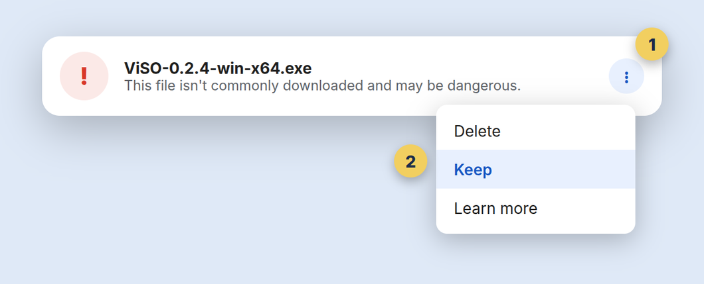
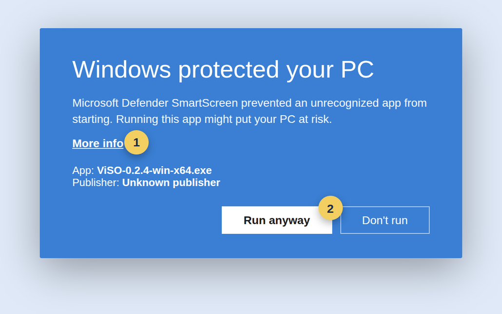
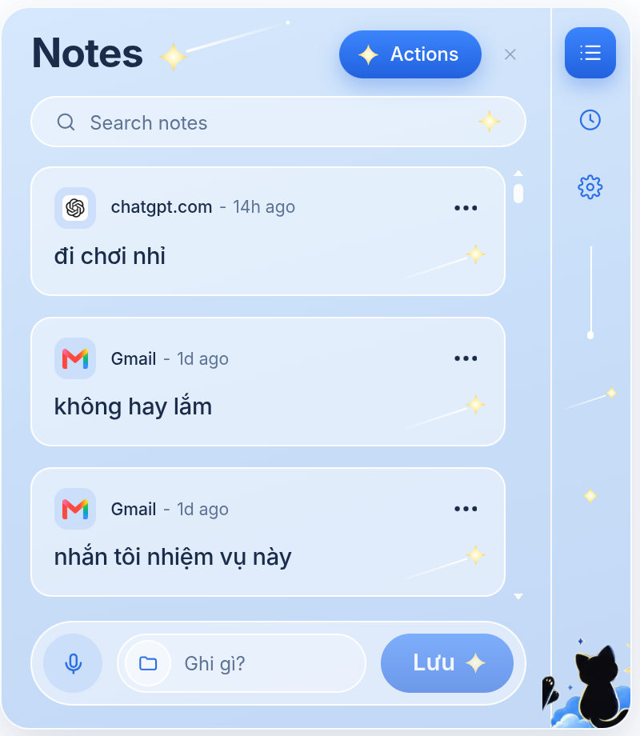
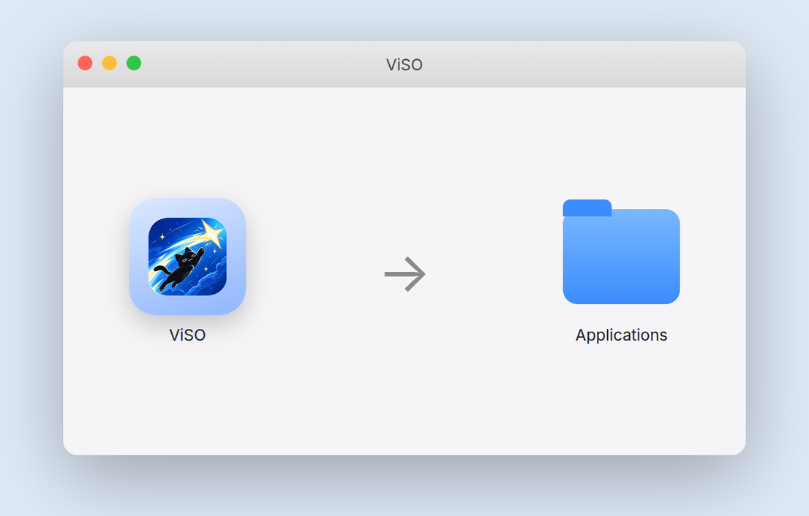
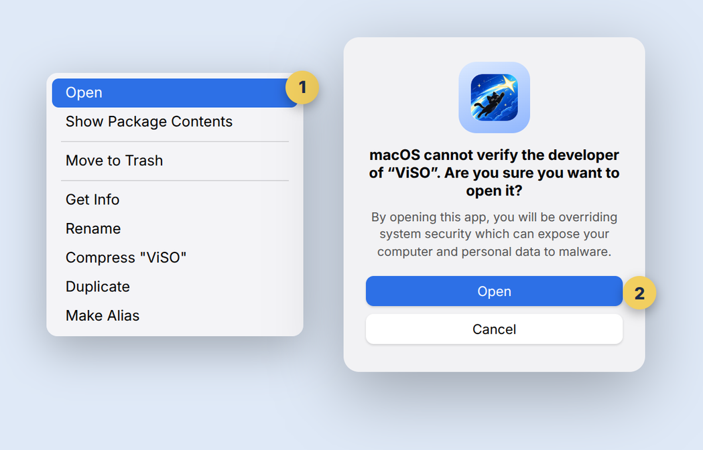
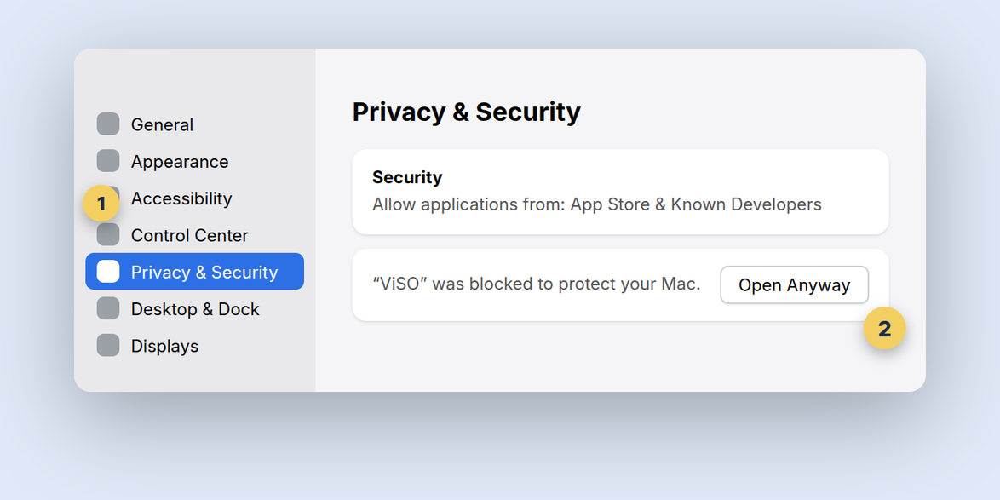
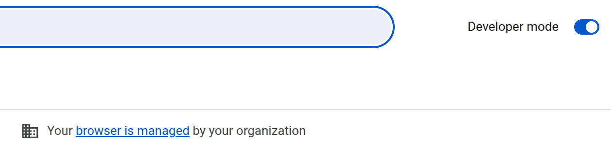
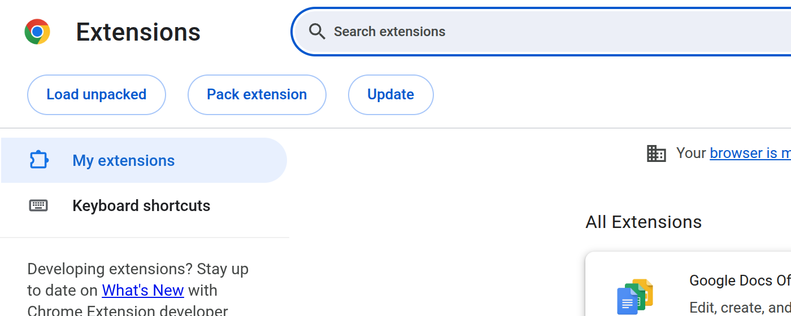

Cài trên Windows
Ba bước, khoảng một phút. Hai màn hình hỏi bên dưới là bình thường với app chưa ký số — cứ bấm như hình.
Tải xong, mở file ViSO-0.2.4-win-x64.exe
Nếu Chrome hoặc Edge nói file "không phổ biến" và tạm giữ lại: bấm ⋮ cạnh file tải về → Keep (Giữ lại).

minh hoạWindows hỏi "Windows protected your PC"
Bấm More info (dòng chữ nhỏ), rồi nút Run anyway hiện ra. Chỉ hỏi một lần.

minh hoạCài tự động trong 30 giây — xong
ViSO tự chạy. Bạn sẽ thấy một vạch mỏng ở mép phải màn hình: rê chuột vào là hiện logo, bấm là mở bảng Notes. App chạy nền, khởi động cùng Windows.
Muốn ẩn/hiện vạch: Ctrl + Shift + H. Biểu tượng ViSO cũng nằm ở khay hệ thống (cạnh đồng hồ).

Cài trên macOS
Kéo vào Applications như mọi app. Lần mở đầu tiên phải mở bằng chuột phải — vì app chưa qua Apple notarize.
Mở file .dmg, kéo ViSO vào Applications
Cửa sổ hiện ra có biểu tượng ViSO và thư mục Applications: kéo thả từ trái sang phải. Xong thì đóng cửa sổ, có thể Eject ổ ViSO.

minh hoạVào Applications, chuột phải ViSO → Open → Open
Đừng bấm đúp lần đầu — macOS sẽ chỉ báo "không xác minh được" rồi thôi. Chuột phải (hoặc Control + click) → Open, hộp thoại hiện ra có nút Open. Từ lần sau mở bình thường.
Thích Terminal:
xattr -cr /Applications/ViSO.app rồi mở như thường.
minh hoạ
SequoiaCho phép Microphone — xong
Lần đầu bấm nói, macOS hỏi quyền micro: chọn Allow. Một vạch mỏng hiện ở mép phải màn hình; rê chuột vào là ra logo, bấm là mở bảng Notes.
Ẩn/hiện vạch: ⌘ + Shift + H. ViSO cũng nằm trên thanh menu (góc phải trên).
Cài extension cho Chrome
Bản Alpha chưa lên Chrome Web Store, nên cài bằng cách "Load unpacked" — 4 bước, có hình. Brave và Edge y hệt.
Tải zip, giải nén ra một thư mục
Windows: chuột phải file zip → Extract All…. macOS: bấm đúp file zip. Bạn được thư mục ViSO-extension-0.2.4, bên trong có manifest.json.
Để thư mục này ở chỗ cố định (ví dụ Documents) — Chrome sẽ đọc từ đây mỗi lần mở, xoá thư mục là extension mất.
manifest.json …
Mở chrome://extensions, bật Developer mode
Gõ chrome://extensions vào thanh địa chỉ (Brave: brave://extensions, Edge: edge://extensions). Bật công tắc Developer mode ở góc phải trên (1) — hàng nút mới hiện ra.

1 Chrome — góc phải trênBấm Load unpacked, chọn thư mục vừa giải nén
Nút Load unpacked (2) ở góc trái. Chọn đúng thư mục có manifest.json (không phải file zip). ViSO xuất hiện trong danh sách — thế là xong.
Trang ViSO Agent Hub tự mở, và extension tự tải model tìm kiếm (118 MB, một lần, chạy nền). Ghim ViSO lên thanh công cụ: bấm 🧩 → biểu tượng ghim cạnh ViSO.

2 Chrome — góc trái trênMở một trang web bất kỳ — tải lại tab đang mở
Các tab đang mở từ trước cần F5 một lần. Khung ViSO hiện ở mép phải trang: gõ Ghi gì?, hoặc @ để chọn loại (ghi chú / lời nhắc / việc), bấm mic để nói (cần app ở trên).
 ViSO trên trang web
ViSO trên trang webDùng thử trong 60 giây
Một phím tắt, nói một câu. ViSO tự hiểu đó là ghi chú, lời nhắc hay việc — không cần chọn trước.
Đang ở trang nào cũng được (Gmail, Notion, YouTube…). Bấm Ctrl + Space — quả cầu Orb hiện lên và nghe ngay. Nói xong, thả tay.
ghi chú gửi báo giá thứ Sáu→ ghi chú của trang
nhắc tôi 3 giờ chiều gọi anh Đông→ lời nhắc
việc cần làm nộp báo cáo→ việc
 Ctrl + Space
Ctrl + SpaceSự cố thường gặp
Ba phút đọc trước khi nhắn cho mình — 90% nằm ở đây.
Nút tải không chạy / file tải về bị chặn
Lấy file trực tiếp ở GitHub Releases (mục Assets). Windows Defender xoá file sau khi tải: mở Windows Security → Protection history → Allow.
Ctrl + Space không ra Orb
Bộ gõ (Unikey, EVKey, tiếng Trung/Nhật…) thường giữ phím này. Windows: Settings → Time & language → Typing → Advanced keyboard settings → Input language hot keys → đổi phím. macOS: System Settings → Keyboard → Keyboard Shortcuts → Input Sources → bỏ tick.
macOS báo "ViSO is damaged"
Mở Terminal, dán xattr -cr /Applications/ViSO.app, Enter, mở lại app. Chỉ cần làm một lần.
Extension nói "App desktop chưa kết nối"
Mở app ViSO một lần (app đăng ký với Chrome ở lần mở đó), rồi vào chrome://extensions → bấm ↻ trên ViSO, tải lại tab. Vẫn không được: khởi động lại Chrome.
Mic không nghe / nhận sai tiếng
Kiểm tra quyền micro cho ViSO (Windows: Settings → Privacy → Microphone; macOS: Privacy & Security → Microphone). Nói cách mic 20–30 cm, câu ngắn, có "nhắc tôi…" hoặc "việc cần làm…" ở đầu để rõ loại.
Gửi lỗi cho mình
Chụp màn hình + file log: Windows %APPDATA%\viso\logs\viso-main.log, macOS ~/Library/Application Support/viso/logs/viso-main.log. Gửi qua kênh bạn nhận link tải, kèm câu bạn đã nói.